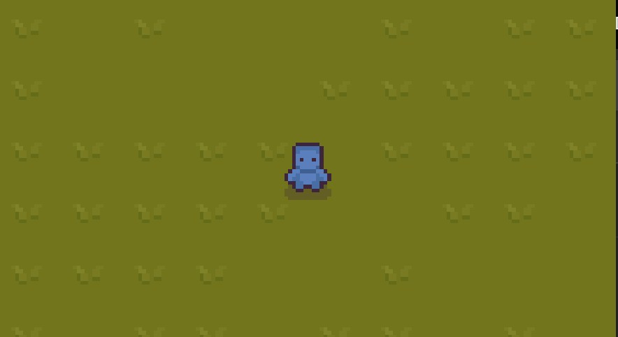

Senior Project
INTERIM
Sutton Fritz
Week 7.
This week I continued developing my idea and game. The new concept is that the player starts on a very small island and they have to gather resources to expand outward. The theory behind this is that resources are limited– you cannot gather wood without replanting trees or else you cannot expand the island, hence the game is over. This idea of sustainability was inspired by the book you recommended, “Mushroom at the End of the World” by Anna Tsing.
As of week 7, I created the first “room” in Game Maker, which is where the player spawns. I have not been working on the art style of the game since I wanted to finish the core mechanics first. I also incorporated the mouse-only moving mechanics.
Next, I want to work on interacting with the environment by being able to destroy and place objects, and start on the art style.
